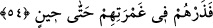
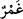
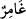
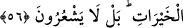

Büyüklerden biri şöyle demiştir: “Kesinleşmiş (ilâhî) ilimde kendisi için ne
yazıldığını bilmediği halde kul kendinde bulunana nasıl sevinir? Âriflere arştan arza
kadar Allah’tan başka bir şeyle sevinmek yaraşmaz. Sâdık bir ârif, ma‘rifet denizlerine
daldıkça idrâkindeki noksanlıkları gördüğü için kederleri sevinçlerinden çok olur.
Şeyh Sa‘dî der ki: “Allah’ın azamet Kâbesinde ibâdete koyulanlar, “Ey Mâbûdumuz!
Sana lâyık olduğun sûrette ibâdet edemedik” diyerek kusurlarını itiraf ederler. Onun
güzel vasıflarını anlatmak isteyenler de, “Hakkıyla senin ma‘rifetine eremedik” diye acz
ve hayret ızhar ederler.
Bana Allah’ın vasfını soracak olsa biri
Her şeyden münezzeh olan hakkında açıkça ne söyleyebilir?
Âşıkları öldüren ma’şuklardır zaten
Ölülerden hiç ses gelmez bu yüzden
54. Şimdi sen onları bir zamana kadar gaflet ve sapıklıkları ile baş başa bırak!
“Şimdi sen onları bir zamana kadar” öldürülecekleri, küfür üzere ölecekleri veya
azâb edilecekleri zamana kadar “gaflet ve sapıklıkları ile baş başa bırak!”
Onların içinde bulundukları cehâlet, boyu aşan ve örten suya benzetilmiştir. Çünkü
onlar onun içinde boğulmuşlar ve onunla oynamaktadırlar.
Râğıb der ki: “
”ın asıl anlamı, bir şeyin izini gidermektir. İşte buradan aktığı
yerdeki izleri gideren çok suya da “
” ve “
” denir. “
” bulunduğu yeri örten çok
su demektir. Sâhibini kaplayan cehâlet için mesel kılınmıştır.
Âyette hitab Rasûlullah (s.a.)’edir. Yani, dağınık vaziyetteki kâfirleri kendi hallerine
bırak. Kalbini onlarla ve dağınık halleriyle meşgul etme.
Bu âyet onları dünyâ ve âhiret azâbı ile tehdid etmektedir. Rasûlullah (s.a.)’i ise
tesellî edilmekte, onların azâba çarptırılması konusunda acele etmesini ve azâbın
geciktirilmesinden tasalanmasını yasaklamaktadır.
55-56. Sanıyorlar mı ki, onlara verdiğimiz servet ve oğullar ile kendilerine
faydalar sağlamak için can atıyoruz? Hayır, onlar işin farkına varamıyorlar.
Kâfirler: “Sanıyorlar mı ki, onlara verdiğimiz” ve yardımcı kıldığımız “servet ve